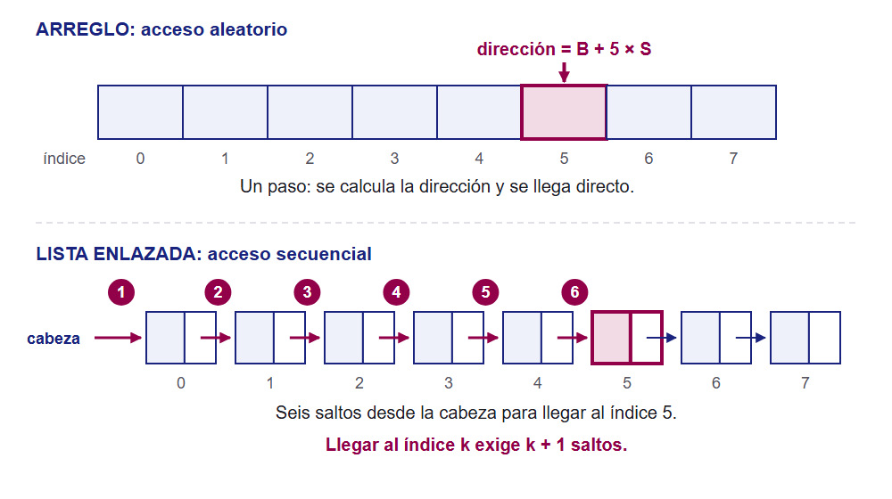
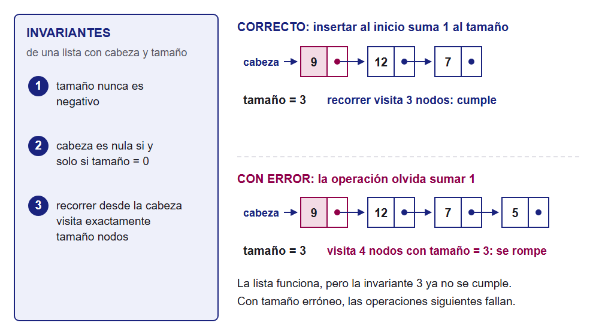

LTI_05U_ESD · Semana 2
Arreglo o lista: costos, acceso y contratos
Acceso aleatorio y secuencial, e invariantes de un TDA
La biblioteca cambió de arreglo a lista y algo empeoró
100 000 préstamos guardados en un arreglo
Cambian a lista para agregar y borrar sin mover nada
resumen_mensual() tarda lo mismo que antes
mostrar_prestamo(k) tarda más cuanto mayor es k
¿Por qué una operación empeoró y la otra no?
Costo de las operaciones con n elementos
Cada estructura paga su costo en un lugar distinto
Insertar en el medio cuesta casi n/2 en ambas
n = 1 000, POSICIÓN 500
Mismo O(n), distinta causa: mover datos o recorrer enlaces
Llegar al índice 5: un paso contra seis saltos

Dos maneras de llegar a un dato
Recorrer todo cuesta O(n) en ambas: por eso el resumen mensual no cambió
Práctica: midan el acceso aleatorio y secuencial
PE-1.2 en la sesión, con la plantilla de Canvas
Implementen la lista enlazada simple
Midan con n = 1 000, 10 000 y 100 000
Tres accesos: al medio, al último y el recorrido completo
Repitan 100 veces y reporten la mediana en microsegundos
Calculen el cociente entre tamaños e interpreten con Big-O
Tres piezas del contrato de una operación
Tres invariantes de una lista y el error que las rompe

Una pila con arreglo y sus invariantes
Invariante 1: 0 ≤ tamano ≤ capacidad
Invariante 2: los válidos ocupan las posiciones 0 a tamano − 1
apilar(x) las conserva si tamano < capacidad
Ahora resuelvan el checkpoint de invariantes
GA-1.1 en la sesión, en el cuestionario de Canvas
Lean las seis afirmaciones
Marquen verdadero o falso en cada una
Justifiquen con una invariante, una precondición o una postcondición
Cierren según las indicaciones de Canvas
Cuatro preguntas para elegir la estructura
Se responden sobre las operaciones del caso
¿Salta a posiciones con frecuencia? Gana el arreglo
¿Inserta o borra al inicio con frecuencia? Gana la lista
¿Agrega al final sin saber cuántos datos habrá? Arreglo dinámico
¿Solo recorre toda la colección? El costo no decide
Una buena justificación nombra la operación dominante
Esta semana entregan tres actividades
PE-1.2
Medición de acceso
Script y reporte con tiempos y Big-O
puntos
2,25
GA-1.1
Checkpoint
Seis afirmaciones con su justificación
punto
1
TA-1.2
Mini informe
Tres casos: arreglo o lista
puntos
2,25
Consigna, plantilla y rúbrica en Canvas.
= elegir con argumentos
Elegir una estructura es comparar costos y respetar su contrato
Próxima semana: pilas y colas